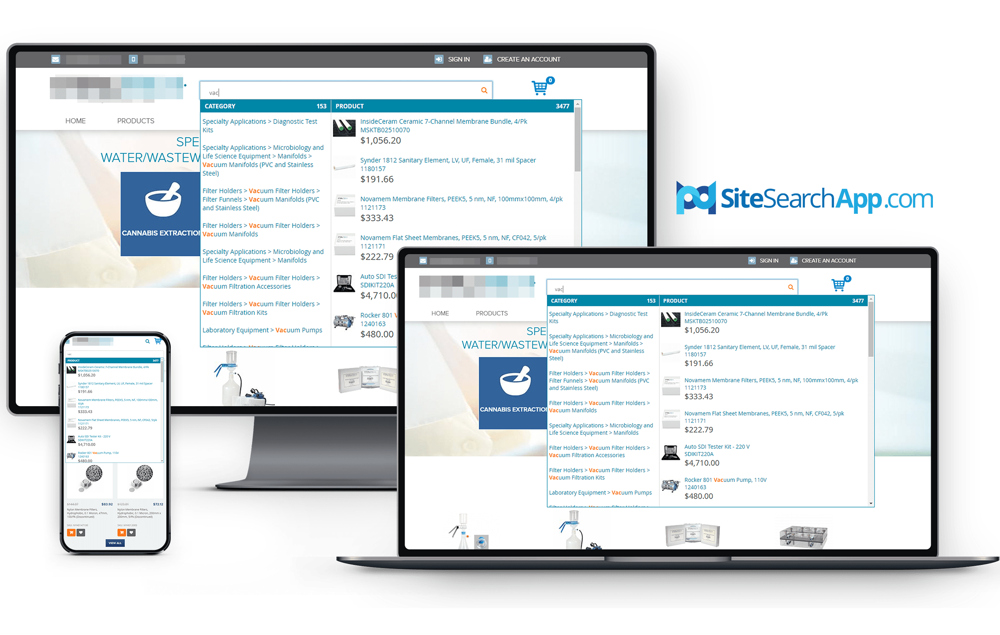
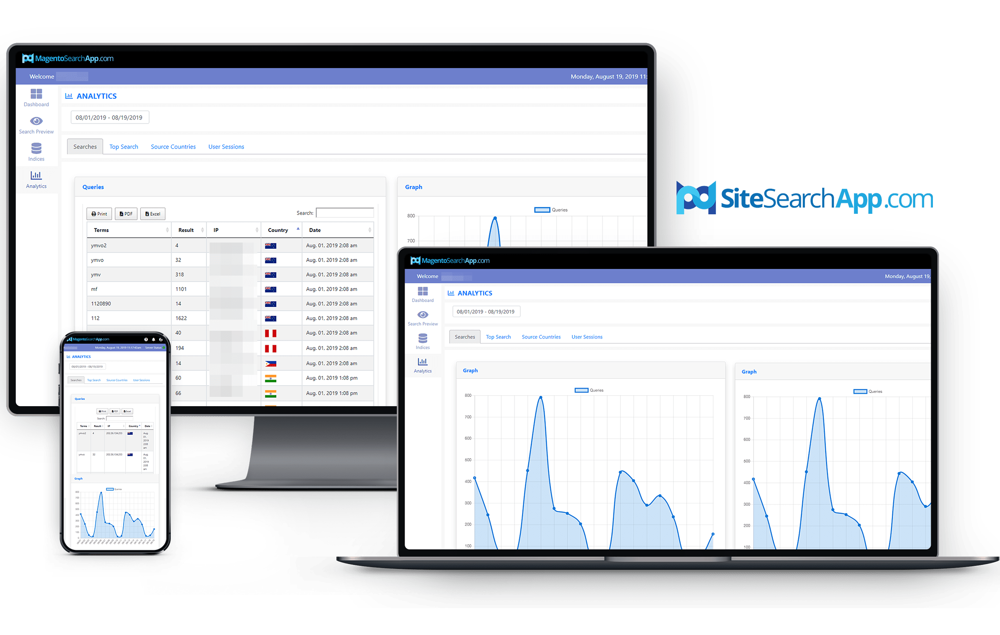
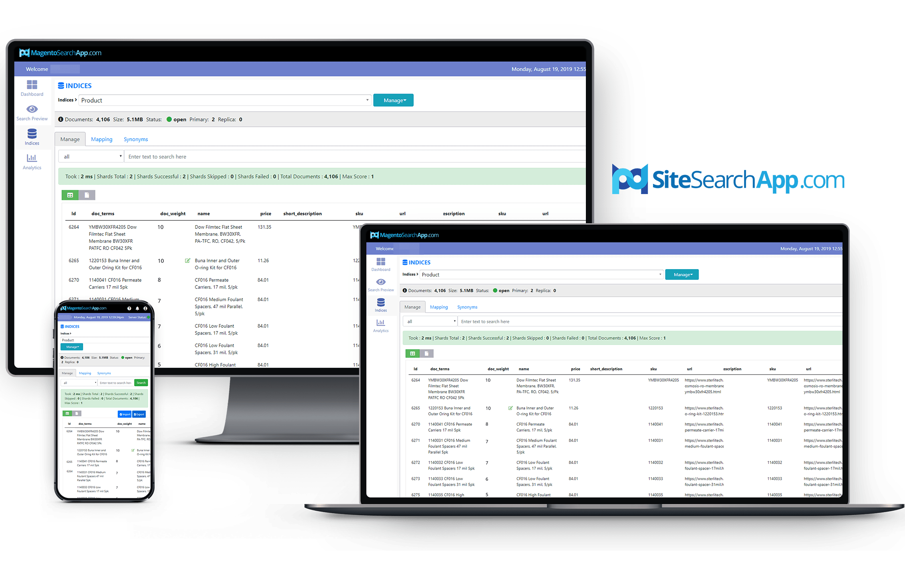

Advanced Search Algorithm For The Most Elaborate Queries
Increase user-engagements and conversion rates with SiteSearchApp's smart semantic search
functionalities. Cover spelling corrections for typo tolerance, plural and singular search terms
submitted, queries separated by spaces, exact phrase matches or close variations. Save a customer's time
typing a full query with autocomplete suggestions.

Insightful Site Search Statistics
Review comprehensive search data accumulated to explore user-behavior, search patterns, and trends. See
all queries documented, view top search terms and queries that did not return results, as well as
collect IP and country source information. Take actionable steps and modify sales strategies for a
richer site search experience and a better customer support system.

Preview Search Results As How Customers Will See It
Check what users see on the search results page when a particular keyword is submitted. Preview how many
products or data types are to be displayed on your website and decide how many of these should appear
per page based on your preference.
Synonym Sets for Smarter and Wider Search Results Scope
Add connections and associations to search terms or concepts by assigning synonyms to take into account
user-intent regardless of vernacular differences, therefore expanding scope of search results.
Intuitive Customizability and Complete Control
Control what shows up first on the website search results depending on your merchandising requirements
or modify
your search output according to your needs, whether focusing on promo products or products with higher
ratings by ranking products through product weights.

Indexing Freedom
The SiteSearchApp lets you decide if you want to index data in real-time or scheduled. Options to
manually index sitewide or by individual records are available as well.
Unadulterated Search Data
SiteSearchApp allows blacklisting of IPs. This lets you gather search terms for analysis only from
relevant sources, excluding possible searches done by countries you do not serve or by your team.
Uncomplicated Integration and Roll-out
Anyone from your team can install and set-up the SiteSearchApp in just minutes, no technical knowledge
are required. Integrations only take a few clicks, copying, and pasting credentials here and there. With
a straightforward API GUI, setting up indices and updating search style and design is effortless.
Additional Resources
 With the Odoo SiteSearchApp extension that offers smart semantic search
functionalities, customers are
provided with the best-suited or targeted products even with the most elaborate queries submitted.
With the Odoo SiteSearchApp extension that offers smart semantic search
functionalities, customers are
provided with the best-suited or targeted products even with the most elaborate queries submitted.